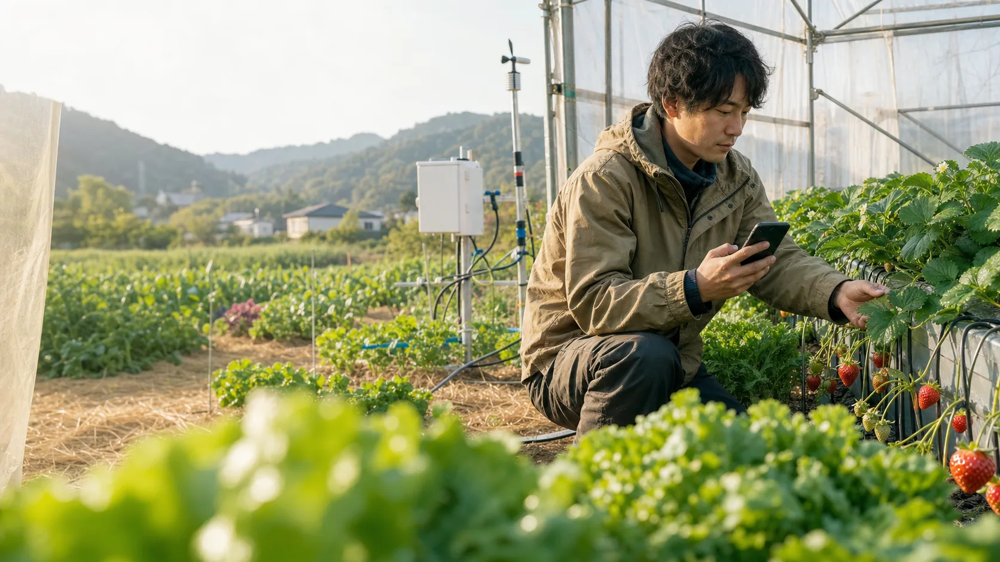

2000年の240万人から、約20年で半減

STARTUP PITCH / 2026
農を、
次の世代へ
渡せる形に。
気候と人口が変わっても、食糧生産を続けるための
オープンな農耕基盤 INAS
THE PROBLEM
農は、今のやり方のままでは続かない。
担い手は減り、現場は暑くなる。
同じ人数と労力を前提にできない。
65歳以上が71.7%
2023年、機械・施設以外の死亡事故原因で最多
2000担い手の減少2024
02 / 13
農業従事者が減る一方、圃場で必要な仕事はなくならない。
WHY NOW
必要になってからでは、遅い。
農の適応は、複数の季節をまたぐ。
今の農が成り立つうちに始める。
35°
CLIMATE
猛暑と環境変化
日本の猛暑日は増加。21世紀末には20世紀末比で、全国平均約3日〜18日増と予測。
気温、雨、水、病害虫。過去の方法がそのまま通用する保証はない。×
DEMOGRAPHICS
人口・担い手の減少
農業経営体は2020年から2025年の5年間で23.0%減。
少ない人数で、観測・判断・作業・保守を続ける仕組みが必要になる。
OUR THESIS
03 / 13
省力化は「楽をするため」だけではない。未来の食糧生産を維持するための適応である。
THE FOUNDER’S CONVICTION
自動化は、
いばらの道です。
農は野良仕事です。暑さ、寒さ、雨、泥、重い資材。
センサーは汚れ、配線は傷み、ポンプはいつか故障する。
楽になることだけを約束しない。
現場と向き合い続けるための、確かな道具をつくる。
BUILT FROM EXPERIENCE
04 / 13
エアコンの効いた部屋から圃場を想像しただけではない。開発者自身の野良仕事と機器運用の実体験を、仕組みに変える。
THE SOLUTION
「見る・考える・動かす」を、ひとつに。
INASは、圃場の事実から
安全な実行と結果確認までをつなぐ。
◉
観測する
センサー・画像
天気・作業履歴
人の観察
→圃場の事実
INAS
HUB
HUB
考え、説明する
評価・提案・根拠
承認・割り当て
安全条件
→上限付き依頼
↯
動かす
人・ポンプ
電磁弁・外部機器
将来のロボット
↩実行結果を確認し、次の観測と判断へ戻す
万能ロボットではないその圃場で使える人と機器を編成
命令して終わらない期待した変化が起きたかを確認
段階的に任せる作業・圃場ごとに自動化範囲を拡張
PRODUCT TODAY
構想ではなく、すでに動いている。
WORKING SYSTEM

圃場の今と、次の作業
環境値を「目標内か」と「何をするか」へ変換。

作業・計画・承認
人が行う仕事も、状態と完了条件を共有。

省電力デバイスと潅水
次の潅水、土壌水分、接続先、設定を一画面に。
Raspberry Pi HubCloudflare AccessMQTT / OTAWTR・WRS・SOI・ENV日本語ドキュメント
06 / 13
START SMALL, GROW LATER
小さく始め、捨てずに育てる。
圃場を機械に合わせない。
今ある現場へ、一つずつ足す。
記録
スマートフォンだけ
作業・写真・観察観測
センサーを1台
状態を遠隔確認提案
理由と期限を提示
人が採否を判断承認付き実行
潅水を1系統
上限・停止・履歴条件付き自律
限定作業から
結果を確認し学習OPENソフト・仕様を公開
LOCAL FIRST圃場のHubが中心
REPAIRABLE理解し、直し、拡張できる
HUMAN IN CONTROL人が目的と例外を決める
TRUST BY DESIGN
AIの賢さではなく、構造で守る。
「AIが言ったから動く」を、
農の自動化に持ち込まない。
LLMの文章→機器を直接作動やらない
根拠と不確実性
何を見て判断したか。データが足りないなら止める。
承認と能力
誰が承認し、どの機器が、どこへ作用できるかを構造化。
物理的な安全境界
上限、間隔、timeout、重複防止、手動停止をAIから分離。
結果と監査履歴
開始・中止・完了・失敗を追跡し、次の判断へ返す。
長期の優位性圃場の事実＋作業状態＋機器能力＋実行結果＝再現できる農作業ループ
08 / 13
BEACHHEAD
最初は、潅水から勝つ。
毎日繰り返し、遠隔化の価値が高く、
結果を土壌水分で確かめられる。
WATERING潅水closed-loop wedge
- 見回り・水やりの移動負担
- 炎天下での定型作業
- 止め忘れ・設定ミス
- 「水が届いたか」の不確実性
小規模農家・生産者
離れた圃場、家族経営、複数の畝。まず1系統から省力化したい。
農業法人・チーム
作業の割当、承認、機器を一つの運用へまとめたい。
学校・地域・実証圃場
観測と作業理由を共有し、改善可能な形で実証したい。
潅水で接点をつくる→圃場の観測と作業へ→施肥・防除・収穫の判断へ
09 / 13
BUSINESS MODEL HYPOTHESIS
オープンに広げ、運用価値で収益化する。
検証中の事業仮説
Open Source / Docs
公開ソフトと資料から試す。自作できる透明性が信頼と開発者接点を生む。
低い導入障壁公式Hub・デバイス
セットアップ済みRaspberry Pi、潅水・センサーデバイスを提供。
初期販売導入・保守・Cloud
遠隔運用、更新、バックアップ、サポート、組織向け管理を継続提供。
継続収益拡張・パートナー
対応機器、作物知識、施工・保守パートナーが参加できる基盤へ。
流通・連携今、確定していること
OSS、動作するHub・F/W、DIY導入経路、公式ハードウェア準備
先行利用で検証すること
誰のどの作業が最も切実か、導入支援の範囲、支払意思、継続価値
まだ置かない数字
価格、粗利、LTV/CAC、売上計画は実証と需要調査の後に確定
MARKET & TIMING
食糧生産の巨大基盤が、
更新期に入った。
市場全体をTAMと呼ばない。
データ活用層から、具体的に入る。
2024年
2025年概数
全体の40.0% — 市場の入口
2024.10
スマート農業技術活用促進法が施行。生産性向上と新しい生産方式を政策で後押し。
40.0%
すでに33.1万経営体が、気象・市況・作業履歴・生育などのデータを活用。
Next
「データを見る」から、人と機器へ安全に仕事を割り当て、結果を確かめる段階へ。
PROGRESS & NEXT PROOF
技術をつくった。次は、事業を証明する。
「実装済み」と「未検証」を分け、
圃場の成果で前へ進む。
今日、動いているもの
- Hub圃場・作業・計画・機器を統合
- Device / F/W土壌水分、潅水、MQTT、OTA
- Remote opsCloudflare Access、Operations API
- Open docs購入・配線・導入・運用まで公開
→
先行圃場で証明すること
- 省力見回り・潅水時間と移動をどこまで減らせるか
- 安全猛暑時間帯の作業と異常時負担を減らせるか
- 生産水分・作業・結果を結び、品質を維持できるか
- 事業再現可能な導入手順、価格、保守モデルを確立
導入前を計測→1系統から導入→季節を通じて比較→製品・価格へ反映
12 / 13
THE FUTURE WE CHOOSE
自然との関係を失わずに、
食糧をつくり続ける。
植物や圃場の呼びかけに人が気づき、自ら応えられる社会をつくり、
その関係と食糧生産の基盤を次の世代へ残す。
WE ARE LOOKING FOR
13 / 13
01
先行利用圃場課題と成果を一緒に測る生産者・実証先
02
製造・施工パートナー現場へ安全に届け、保守できる体制
03
事業・資本パートナー技術を継続可能な事業へ変える仲間